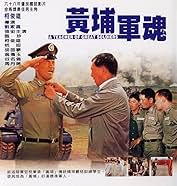
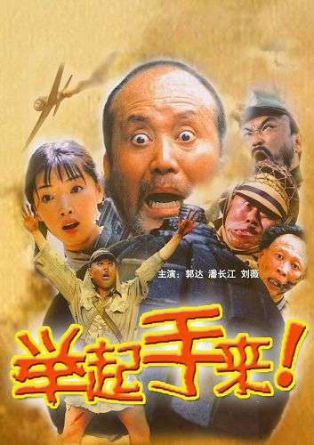

Produced by the Central Motion Picture Corporation (Taiwan), the film tells the story of Jiang Zhisen, a company commander instructor at the Whampoa Military Academy after the Kuomintang retreated to Taiwan in 1949. He trains students with the principle of "Iron Discipline, Loving Education," and the story showcases the camaraderie between teachers and students at the military academy through his interactions with them. In the film, Jiang Zhisen and his wife care for the students' growth over the long term. The timid student Liu Zhiliang becomes a school principal under his guidance, and Zhou Haoting grows into a major general officer after experiencing his mother's death from illness. In 1979, Ke Junxiong won the Best Leading Actor award at the 16th Golden Horse Awards for his role in this film.
Pretty Crazy(Korean: 악마가 이사왔다; formerly titled 2 O'Clock Date (Korean: 2시의 데이트; RR: 2siui deiteu)) is a 2025 South Korean romantic comedy film directed by Lee Sang-geun, starring Im Yoon-ah and Ahn Bo-hyun. It tells the story of a woman from downstairs having an unimaginable secret, meeting the man from upstairs at 2 a.m., and having an extraordinary date, when everyone else in the building is asleep.

"Hands Up!" is a war film produced by China Film Group Corporation Beijing Film Studio, written and directed by Feng Xiaoning , and starring Guo Da , Pan Changjiang , and Liu Xiaowei. The film was released in Chinese mainland on January 2, 2005. The film tells the story of how "my grandmother," in an attempt to deliver evidence gathered by patriotic students, accidentally ends up in Shiqiao Village. There, she cooperates with the farmers in the village and the returning guerrilla fighters to completely annihilate a squad of Japanese soldiers. As of 2010, "Hands Up!" had been screened nearly 300,000 times in the rural digital film mobile projection system, ranking first in the national screening count for six consecutive years.